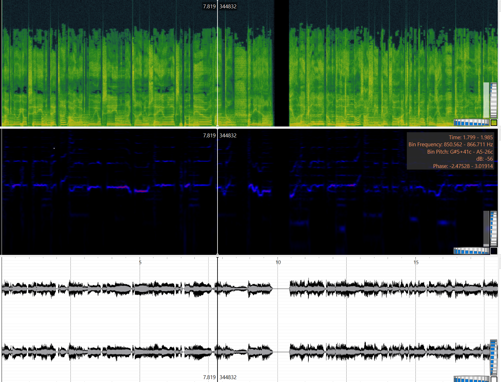
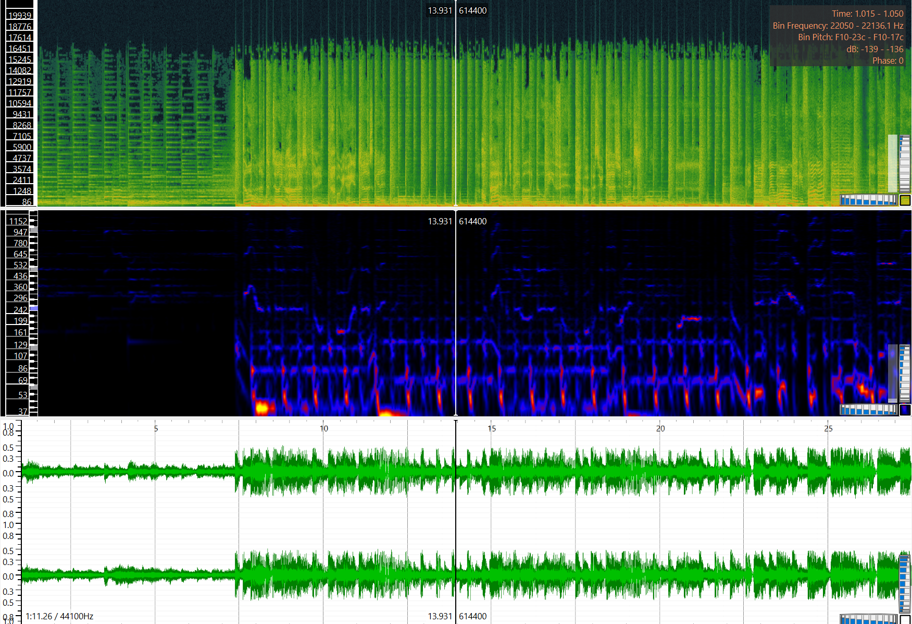
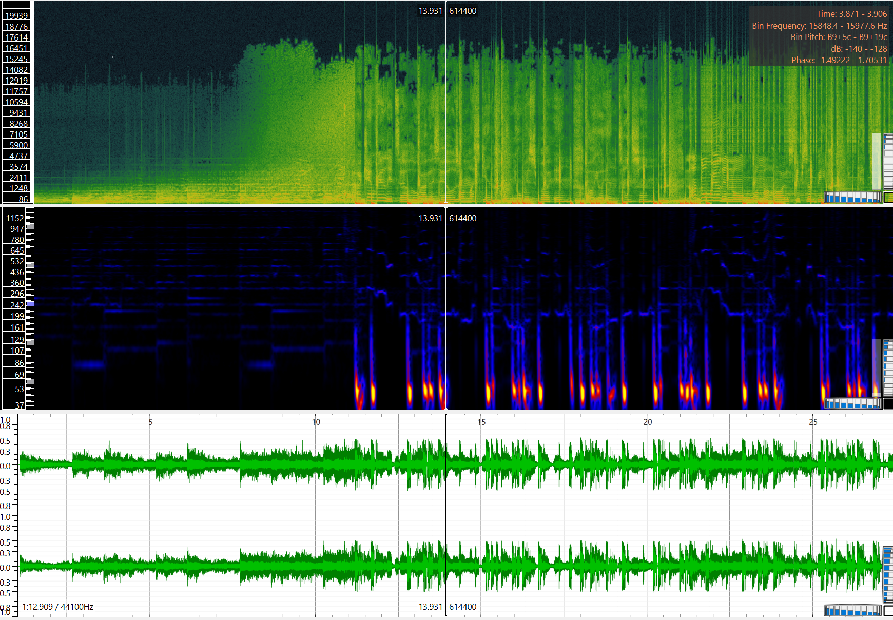
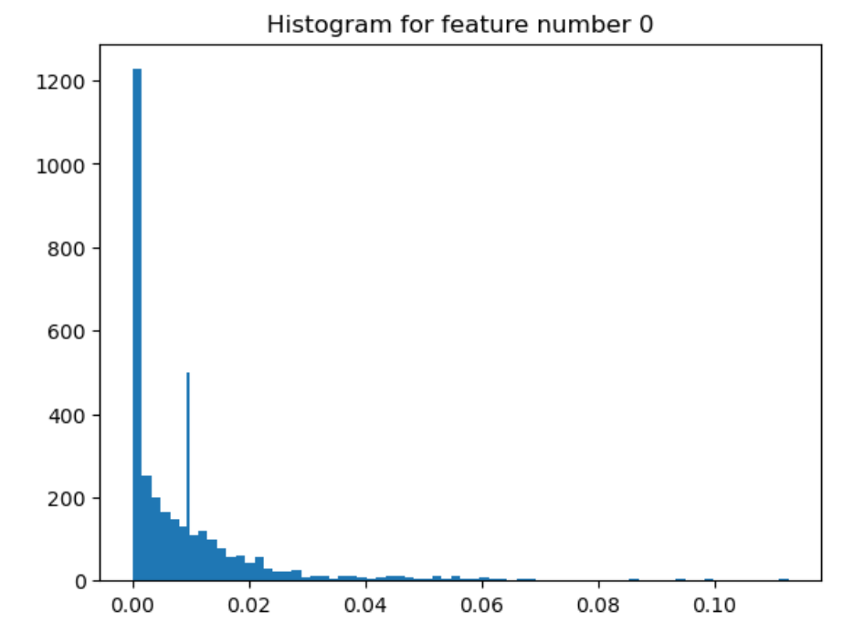
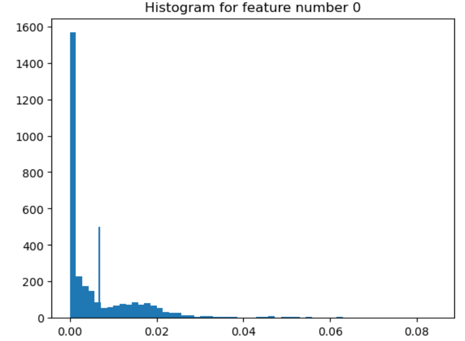

Foucsing on the previous audios from last week: Why, Juno, and First Love, these are the three aspects generated on SonicVisualizer:
  Each image starts with the speectogram, then the melodic frequency, and lastly the chromogram.
The next being Juno:
Lastly being First Love
Overall, the three histograms do capture very similar data. I was quite suprised by this as I tried to select tracks that fell under different genres. However, they are all made by the same artist, Sabrina Carpenter, so it is at the same time unsurprising that she maintains a similar over the course of her music.